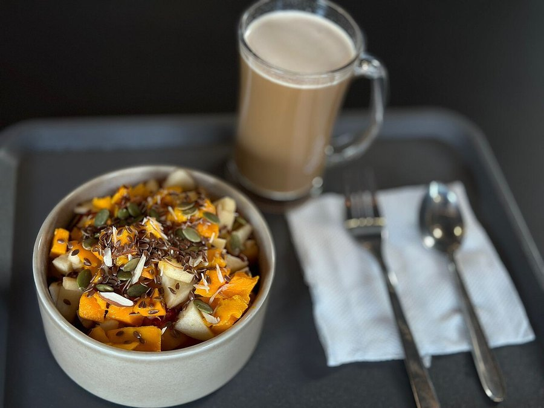

Protein at Breakfast and Energy: What Studies Show
The same calories at breakfast can leave you crashing by 10am or steady until lunch, and the protein content of that meal is a big part of why.

Key takeaways
- A protein-rich breakfast, roughly 25 to 35 grams, digests more slowly than a carb-heavy one, which helps keep blood sugar and energy steadier through the morning.
- A refined-carb breakfast tends to spike blood sugar fast, then drop it, a pattern linked to the mid-morning slump many people blame on "just being tired."
- Protein also raises satiety hormones more than carbs or fat do, which is why high-protein breakfasts are linked to less snacking before lunch.
- The effect is about steadiness, not a stimulant boost. It won't counteract genuinely poor sleep or an overloaded schedule.
- Plant and animal protein sources appear to work through the same basic mechanisms, though most direct research has used animal protein.
Protein at breakfast and energy are linked mainly through blood sugar, not through any direct stimulant effect the way caffeine works. A breakfast built around protein digests more slowly and raises blood sugar more gradually than one built around refined carbohydrates, and that slower, steadier rise is associated with fewer energy crashes in the hours that follow.
Here's what the actual research measures, how much protein it takes to see the effect, and where the evidence runs out.
Why would protein at breakfast affect energy at all?
Protein takes longer to digest than carbohydrate, and it doesn't raise blood sugar nearly as quickly or as high. A breakfast heavy in refined carbs, white toast, sugary cereal, a pastry, causes a fast rise in blood glucose, followed by an insulin response that can pull glucose down sharply afterward. That drop is what many people experience as the mid-morning slump: a sudden drag in energy and focus a couple of hours after eating. A protein-forward breakfast blunts both the spike and the crash, which is the mechanism behind most of the energy claims tied to it.
What does the research actually show?
Studies comparing high-protein and low-protein or carb-heavy breakfasts, matched for total calories, generally find steadier post-meal blood sugar, greater feelings of fullness, and reduced snacking before lunch with the higher-protein version. Several of these studies also report better subjective alertness or reduced fatigue ratings in the late morning for the high-protein group, though the size of that effect varies between studies and participants. The blood sugar and satiety findings are more consistent across the research than the subjective-energy ratings, which is worth knowing if you're expecting a dramatic, universal effect.
How much protein counts as a "high-protein" breakfast?
| Breakfast type | Typical protein | Pattern seen in research |
|---|---|---|
| Refined-carb breakfast (pastry, sugary cereal) | Under 10g | Fast blood sugar rise and drop; more reported mid-morning fatigue |
| Moderate-protein breakfast (toast with eggs, yogurt) | 15-20g | Some blunting of the blood sugar swing |
| High-protein breakfast (eggs, Greek yogurt, protein shake) | 25-35g+ | Strongest, most consistently measured effect on satiety and steadier glucose |
Most of the research showing a clear effect used breakfasts in that 25 to 35 gram range, which is more protein than a typical bowl of cereal or a plain bagel provides. Smaller amounts of protein still help somewhat compared with none at all, but the more consistently measured benefits cluster at the higher end of that range.
Does protein breakfast actually prevent the mid-morning slump?
For many people, it reduces the severity of it rather than eliminating it outright. The mid-morning slump has more than one cause, poor sleep, dehydration, a packed meeting schedule, so a protein-rich breakfast addresses the blood-sugar piece specifically, not every contributor. Our guide to the afternoon energy slump covers the later-day version of this same pattern, which often has an overlapping but not identical set of causes.
Does a carb-heavy breakfast really spike blood sugar that much?
It can, particularly with refined, low-fiber carbohydrates eaten without much protein or fat alongside them. The size of the spike depends on the specific food, portion, and what else is eaten with it; a slice of white toast alone behaves differently than the same toast eaten with eggs and avocado, since fat and protein both slow the rate sugar enters the bloodstream. Our piece on blood sugar spikes after eating goes deeper into what drives the size of a post-meal spike generally, not just at breakfast.
Does skipping breakfast change the picture?
It depends heavily on the person. Some people function fine on intermittent fasting or skipping breakfast regularly, with no notable energy complaints. Others report more irritability, fatigue or difficulty concentrating by late morning when they skip it. The research on protein content here is really answering a narrower question: if you are going to eat breakfast, does its composition matter for energy? The answer leans yes, protein over refined carbs, but it isn't an argument that everyone must eat breakfast in the first place.
What foods deliver protein at breakfast realistically?
- Eggs, prepared any way, roughly 6 to 7 grams of protein each
- Greek yogurt or cottage cheese, both commonly 15 to 20 grams per typical serving
- A protein smoothie built on milk, yogurt or a protein powder base
- Smoked salmon, deli turkey or leftover chicken added to toast or a wrap
- Tofu scramble or edamame for a plant-based option with a similar protein density
Combining two or three of these easily reaches the 25 to 35 gram range the research most often uses, without needing an unusually large meal.
Does plant protein work as well as animal protein for this effect?
Most of the direct comparison studies used animal protein sources, eggs and dairy especially, simply because they're easy to standardize in a lab setting. The underlying mechanisms, slower digestion and a smaller insulin response, aren't unique to animal protein, so a high-protein plant breakfast built around tofu, legumes or a plant-based protein powder should plausibly work on the same principles. It's a reasonable extrapolation rather than a separately proven finding, since head-to-head plant-versus-animal protein breakfast studies are still fairly limited.
Who benefits most from this, and who doesn't need to worry about it?
People who regularly notice a sharp energy drop an hour or two after breakfast, or who find themselves snacking heavily before lunch, are the most likely to notice a difference from shifting toward a higher-protein breakfast. People managing blood sugar conditions, prediabetes or type 2 diabetes among them, often see this effect amplified, since their blood sugar swings tend to be larger to begin with; that group should still coordinate meal changes with their own care team rather than changing things unilaterally. People who already feel fine through the morning on whatever they're currently eating don't necessarily need to overhaul anything.
What are the limits of this research?
Many of these studies are short-term, measuring blood sugar and subjective energy over a single morning or a few days rather than months. Individual blood sugar responses to the same meal also vary more between people than nutrition advice sometimes implies, so a given protein target is a reasonable starting point, not a guarantee for every person. The satiety and blood-sugar findings are the most consistently replicated part of this research; the subjective alertness and mood improvements some studies report are real but somewhat less uniform across the literature.
Does total daily protein matter more than breakfast specifically?
Probably, for most of the broader health outcomes tied to protein, muscle maintenance, satiety across the whole day, healthy aging. Breakfast's specific role in the energy story is about timing: eating adequate protein early tends to blunt the morning blood sugar swing before it has a chance to happen, rather than fixing it after the fact at lunch. Someone who gets plenty of protein overall but loads most of it into dinner may still notice the same mid-morning dip that a low-protein eater does, since the meal actually eaten at breakfast is what's driving blood sugar in those hours. Shifting some protein earlier in the day, without necessarily eating more of it overall, is the more precise takeaway than simply eating more protein in general.
Does meal timing or breakfast size matter alongside protein content?
To a degree. A very large breakfast, even a high-protein one, can leave some people feeling sluggish rather than energized, simply from the volume of food being digested at once. A moderate portion with a solid protein base tends to outperform both a tiny coffee-only breakfast and an oversized one in most of the comparative research. People who train early in the morning or have physically demanding jobs often do better with a slightly larger, protein-forward breakfast than someone with a sedentary desk-based morning, since their bodies are burning through fuel faster regardless of what the blood sugar graph shows.
Frequently asked questions
How much protein should breakfast have for better energy?
Research on satiety and blood sugar most often uses breakfasts with 25 to 35 grams of protein. Smaller amounts still help somewhat, but that range is where most of the measured benefit shows up.
Does a high-protein breakfast actually prevent the mid-morning slump?
It helps reduce it for many people, mainly by blunting the blood sugar spike and crash that a carb-heavy breakfast can cause. It won't fully offset poor sleep or an otherwise exhausting schedule.
Is skipping breakfast worse for energy than eating a low-protein one?
It depends on the person. Some people do fine skipping breakfast; others report more fatigue and irritability by mid-morning. If you do eat breakfast, the research suggests leaning toward protein over refined carbs for steadier energy.
Does plant protein work as well as animal protein for this effect?
Most of the comparative research used animal protein, like eggs and dairy, but the blood-sugar and satiety mechanisms involved aren't unique to animal sources. A high-protein plant breakfast, like a tofu scramble or a protein-rich smoothie, should work on the same principles, though it's studied less directly.
Can a high-protein breakfast help with afternoon energy, not just morning?
Somewhat, through indirect effects. Steadier blood sugar in the morning and feeling fuller for longer can reduce the big swings that sometimes cascade through the rest of the day, though lunch and overall sleep still carry more weight for afternoon energy specifically.
Does coffee cancel out the benefit of a high-protein breakfast?
No, they work through different, mostly unrelated mechanisms. Caffeine blocks a fatigue signal in the brain temporarily; protein's effect works through digestion speed and blood sugar. Many people use both together without one undoing the other.
Related: Afternoon energy slump · Blood sugar spikes after eating · Metabolism after 40 · Why am I always tired?